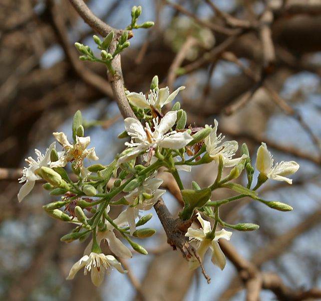

🌿 சித்த மருத்துவக் குறிப்பு:
வெட்பாலை இலையைத் தேங்காய் எண்ணெயில் காய்ச்சிய தைலம், காளாஞ்சகப்படை (Psoriasis), பொடுகு போன்ற தோல் நோய்களுக்குச் சித்த மருத்துவத்தில் புகழ்பெற்றது. (வெளிப்பூச்சுக்கு மட்டும்; நீண்டகாலத் தோல் நோய்க்கு மருத்துவரை அணுகவும்.)
🌳 வெட்பாலை – உங்களுக்குத் தெரியுமா?
1பால் சுரக்கும் மரம்
இலை, கிளைகளை ஒடித்தால் வெண்மையான பால் வடிவதால் "வெண்பாலை – வெட்பாலை" என்று பெயர்.
2நீலச் சாயம் தரும் இலைகள்
இதன் இலைகளிலிருந்து இயற்கையான நீல நிறச் சாயம் (இண்டிகோ) எடுக்கப்படுகிறது. அதனால் இதன் அறிவியல் பெயரிலேயே “tinctoria” (சாயம்) என்ற சொல் உள்ளது.
3பொம்மை செய்யும் மரம்
இதன் மரம் வெண்மையாகவும் மென்மையாகவும் இருப்பதால், மரப்பொம்மைகள், சிற்ப வேலைகள் செய்யப் பயன்படுகிறது.
இந்தத் தகவல் பயனுள்ளதாக இருந்ததா?